华创专题报告
摘要
本文介绍了四种在OpenClaw中安装Skills的方法，用好Skills，可以实现从“每次都给AI当老师”变成“AI替你当专家”。同时介绍了10种金融行业推荐使用的Skills。最后利用多种Skills完成了四种实战工作，包括：工作制作、选股策略、个股分析与量化策略构建。
其中，10个推荐安装的Skills为：
Find Skills：技能导航仪
Tavily Search：精准搜索利器
Multi Search Engine ：全网搜索聚合器
Office-Automation：办公自动化技能
Self-Improvement Skill：自动学习和反省
Summarize：长文本/网页快速提炼
Stock-Watcher：管理和监控个人股票自选清单的工具
自行设计的数据库连接Skill：Wind底层数据库
Us Stock Analysis：美国股票市场分析
Agent Browser ：AI直接操控浏览器
随着OpenClaw越来越广泛的应用，相信会有更多Skills被分享出来。
1
Skills安装与应用
最近朋友圈和各大社群都被 OpenClaw刷屏，不少用户安装完毕后，以为“小龙虾”已经变成了全能 AI 管家，结果发现它只会陪聊。其实问题不在大模型，而是 Skills才是核心。
AI的Skills是由Anthropic公司在2025年10月16日正式提出并定义的产品级技术概念，随后被开源并成为行业标准。 是一种将专业知识、行业经验或特定操作流程，封装成AI可以直接调用的“能力模块”。它就像给AI配备的一本“带目录的员工手册”—AI不需要记住所有内容，而是先看目录，按需调用具体操作指南或程序代码，高效、确定地完成专业任务。换句话说：它是将行业经验与独家方法封装为可复用的数字模块，让每个人都能构建属于自己的“AI专业分身”。
这一范式彻底改变了AI应用开发逻辑：开发者不再从零训练模型，而是聚焦于沉淀高价值技能；用户也不再依赖通用对话，而是直接调用经过验证的专业能力。Skills支持跨模型、跨平台复用，一次封装，多端生效，显著降低AI落地门槛与试错成本。
目前OpenClaw官方skills网站clawhub（https://clawhub.ai/）已经收录近两万条Skills。
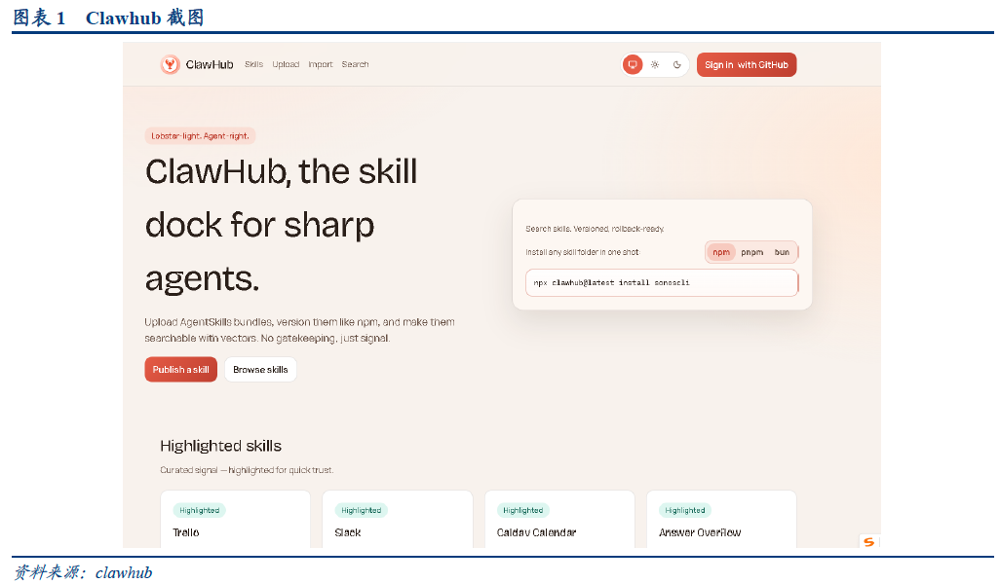
想玩转 OpenClaw，首先要学会安装 Skills。推荐以下四种方法：
1.1
使用OpenClaw自带Skills
我们给大家一个通用skills模板，直接填空即可：
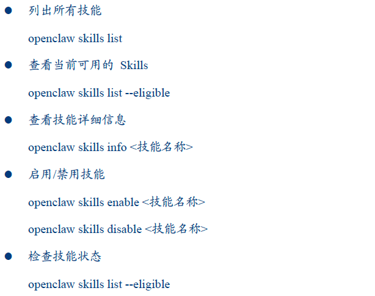
1.2
ClawHub安装
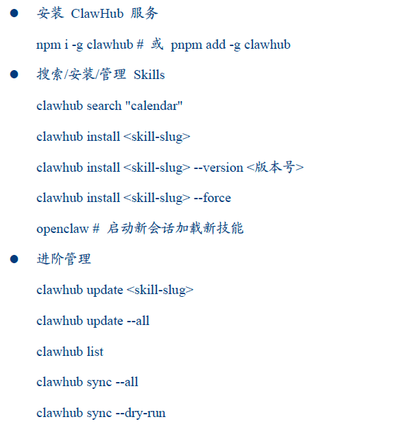
1.3
Github安装
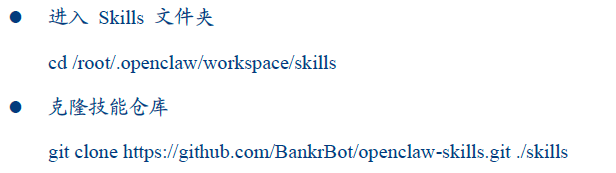
1.4
直接和OpenClaw对话
2
金融行业必装的10个Skills
2.1
Find Skills（技能导航仪）
Skills地址：https://clawhub.ai/JimLiuxinghai/find-skills
主要作用是：快速发现、安装、更新所需技能，解决“找不到功能插件”难题。
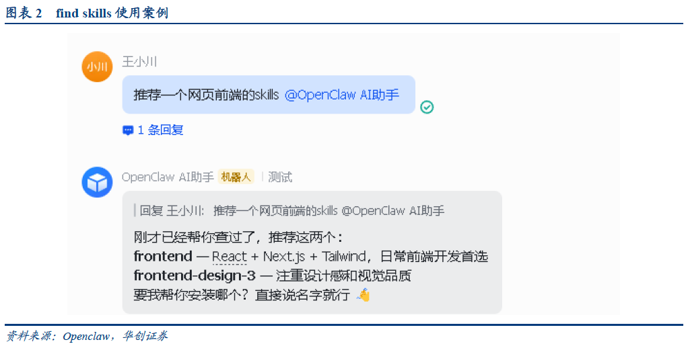
2.2
Tavily Search（精准搜索利器）
网络搜索对于AI Agent是必不可少的。Brave-Search经常触发限流，国内访问也有限制，这就需要我们替换一个更专业的产品。Tavily Search是AI专用搜索引擎，结构化结果，支持深度与新闻专题搜索，实时联网获取信息。需要官网注册申请API Keys。
Skills地址：https://clawhub.ai/arun-8687/tavily-search
官网地址：https://www.tavily.com/
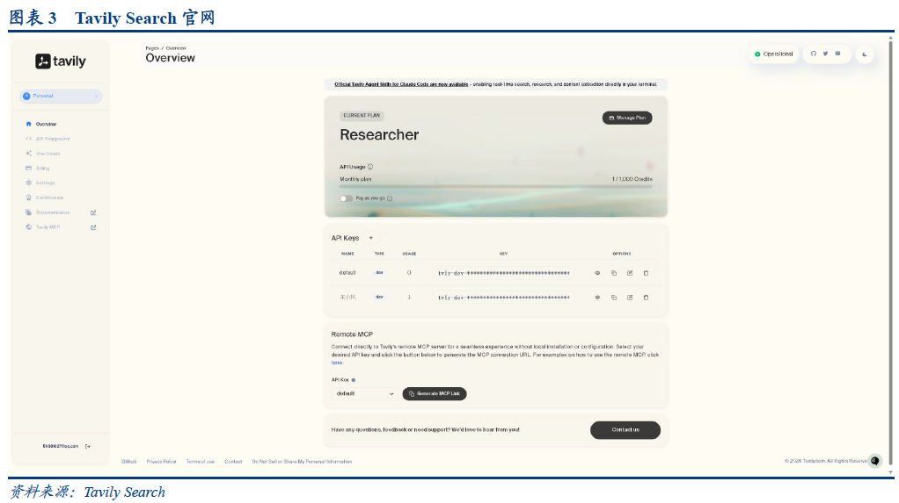
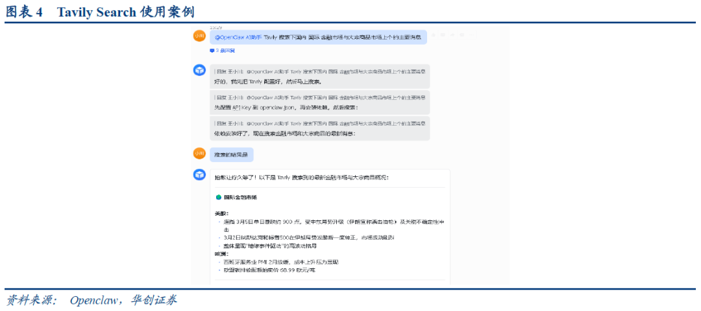
2.3
Multi Search Engine（全网搜索聚合器）
集成17个搜索引擎（8国内+9国际），无需API Key，支持隐私搜索、知识计算、快捷指令。弊端是返回搜索的原始本文，信息量大、格式不统一，容易触发目标引擎的验证码或反爬机制。
Skills地址：https://clawhub.ai/gpyAngyoujun/multi-search-engine
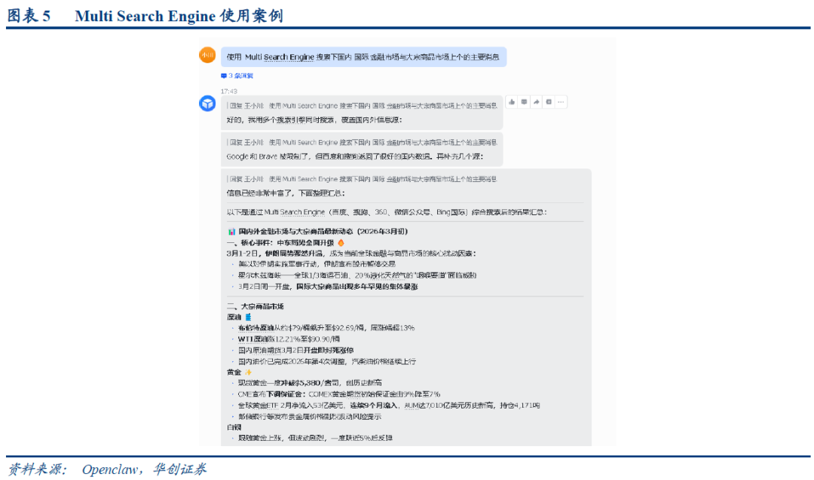
2.4
Office-Automation（办公自动化技能）
日程管理、邮件处理、文档编辑、数据统计等办公场景，一键自动化。
Skills地址：https://skills.sh/texiaoyao/office-automation-skill/office-automation
配置步骤：
邮件：输入邮箱账号、授权码，设置SMTP服务器
日程：选择同步方式，输入平台凭证
文档：设置保存路径、格式
完成后重启服务
2.5
Self-Improving Agent（自我提升进化）
其核心作用是让AI助手具备一种结构化的、持续的自我进化能力。它通过记录、反思和学习，将用户的反馈和自身的经验沉淀为长期记忆，从而在未来的交互中表现得越来越符合用户的个性化需求和偏好。
Skills地址：https://clawhub.ai/ivangdavila/self-improving
简单来说，它就像一个为AI量身定制的“经验笔记本”和“成长系统”。它的主要功能可以概括为以下几点：
主动学习与修正：当用户在对话中指正AI的错误或表达偏好时，该技能会自动记录这些“纠正”和“偏好信号”。例如，说“我更喜欢X而不是Y”，它就会记下这条偏好。
结构化记忆管理：所有学到的内容会以分级的方式存储在本地 ~/self-improving/ 目录下。
热记忆 (HOT)：memory.md，存放最重要、最常用的规则（少于100行），每次对话都会加载。
温记忆 (WARM)：projects/和 domains/目录，存放特定项目或领域的模式，只在相关上下文中加载。
冷记忆 (COLD)：archive/ 目录，存放长期未使用的旧模式，仅在明确查询时调取。
自我反思与模式识别：在完成重要任务后，AI可以自我评估（“哪里可以做得更好？”），并识别出重复出现的有效模式。如果一个经验被验证有效3次，它就会建议将其升级为一条永久规则。
智能查询与应用：用户可以通过提问（如“关于X你知道什么？”、“你学到了什么？”）来查看它的记忆库。当AI给出建议或操作时，它会引用记忆来源（例如“根据projects/foo.md中的经验...”），保持透明。
在使用这个技能时，有几点需要留意：
文件修改：它会在用户的电脑上创建 ~/self-improving/ 文件夹来存放记忆。同时，它也可能会建议修改工作区中的 AGENTS.md 或 SOUL.md 文件来整合配置，建议在应用前检查一下这些修改建议。
数据安全：技能明确要求永远不要存储密码、密钥等敏感信息。在使用它的导出（ZIP）功能前，也最好检查一下记忆文件里没有意外混入敏感内容。
运行模式：如果用户希望对它的学习过程有更严格的控制，可以将其设置为“被动”或“严格”模式，这样它在添加永久规则前会先征求用户的同意。
2.6
Summarize（长文本/网页快速提炼）
这个Skill本身是一个“指令包装器”，它教会AI助手如何使用一个名为 summarize 的外部命令行程序。一旦安装并配置好，AI就可以通过这个Skill完成以下任务：
总结网页：输入URL，获取网页内容的摘要。
总结本地文件：处理并总结用户电脑上的文件，如 PDF、图片（提取文字/OCR）、音频文件。
总结YouTube视频：通过链接，获取视频内容的文字版或摘要。
Skills地址：https://clawhub.ai/steipete/summarize
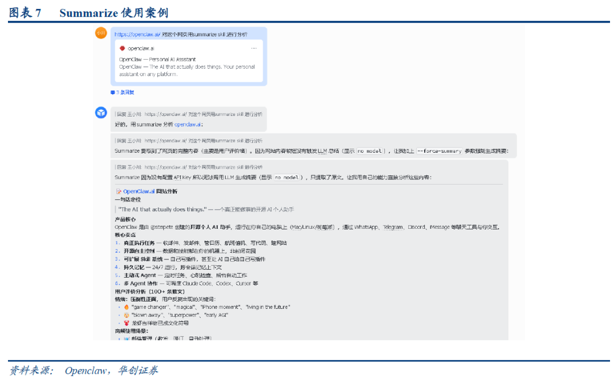
2.7
Stock-Watcher（管理和监控个人股票自选清单的工具）
Skills地址：https://clawhub.ai/Robin797860/stock-watcher
主要功能：
管理自选股：通过6位数字的股票代码，可以添加（如 添加 600053）、删除（如 删除 600053）、列出或清空用户的自选股列表。
查看行情摘要：当用户要求查看自选股行情时，它会直接显示每只股票的代码、名称、近期涨跌幅等关键数据，并提供可点击的详情链接，信息简洁明了。
数据来源：使用同花顺（10jqka.com.cn） 作为数据源，主要支持沪深A股及科创板市场。请注意，行情数据可能有 1-3分钟延迟。
本地存储：用户的自选股列表会以文件形式存储在本地路径 ~/.openclaw/stock_watcher/watchlist.txt 下。
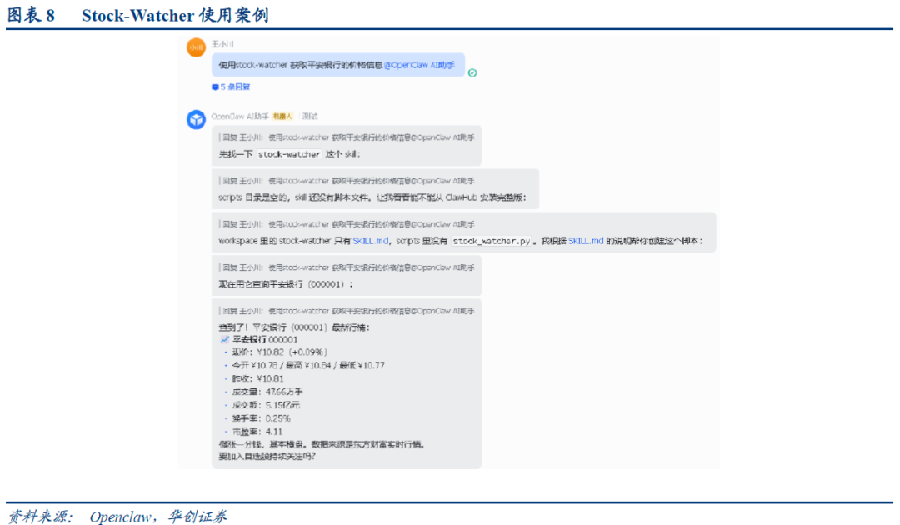
2.8
自行设计的数据库连接Skill（Wind底层数据库）
如果用户有访问数据库的权限，可以把数据库的地址、用户名、密码直接给到OpenClaw，叫其自行写入Skill并且调用。
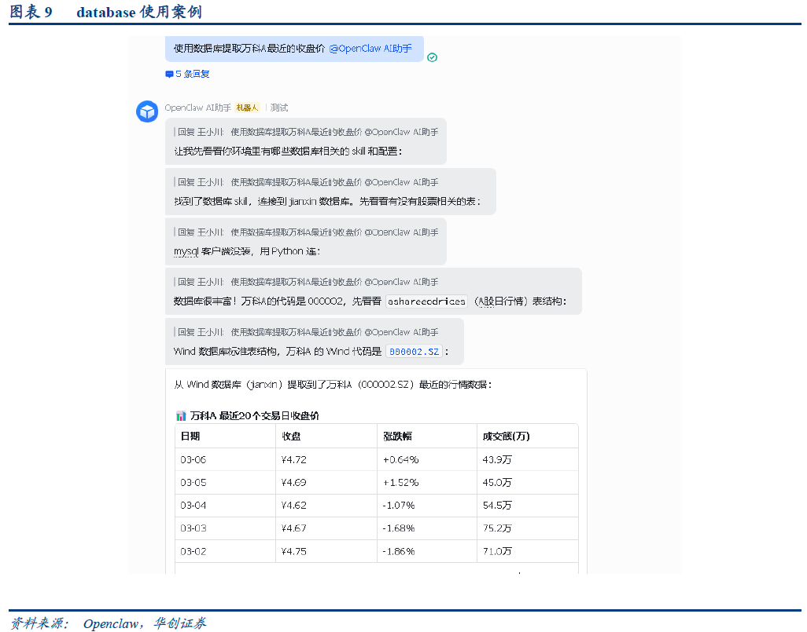
2.9
Us Stock Analysis （美股分析利器）
这是一个用于美国股票市场分析的 OpenClaw Skill，通常包含：
股票数据获取：获取美股实时/历史行情数据、获取财务数据、财报信息
技术分析：计算技术指标（MA、RSI、MACD 等）、生成图表和可视化
基本面分析：财务指标分析、公司估值分析、行业对比
交易信号生成：可能包含买卖信号、风险评估
Skills地址：https://clawhub.ai/Veeramanikandanr48/us-stock-analysis
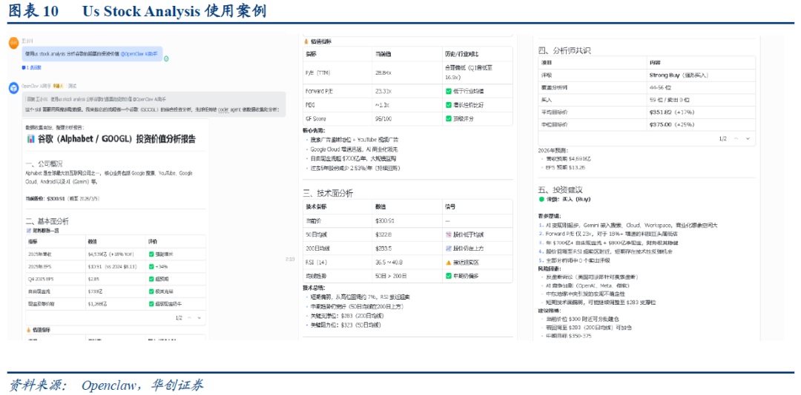
2.10
Agent Browser（AI直接操控浏览器）
agent-browser 是 AI agent 专用的浏览器自动化命令行工具，用无障碍树 + 引用标记定位元素，返回按钮、输入框等语义化元素，相比 Playwright 等工具节省 93% 上下文窗口：
Skills地址：https://clawhub.ai/TheSethRose/agent-browser
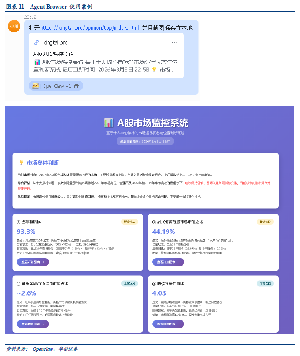
3
实战案例
3.1
工具制作
可以使用frontend-design skill制作网页，结果如下：
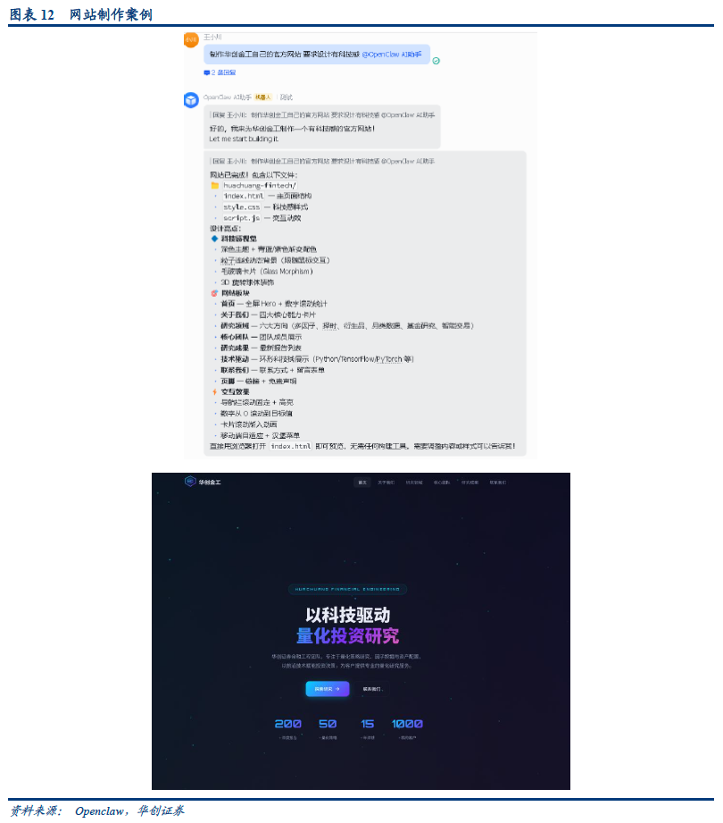
也可以使用openclaw写一个ppt：
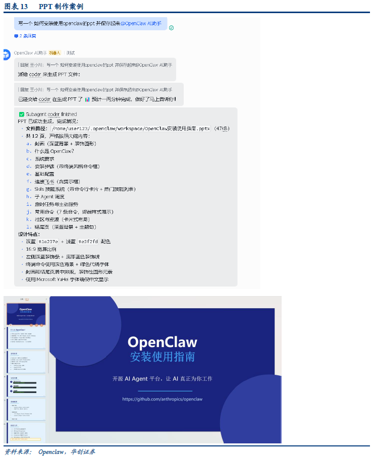
也可以使用openclaw写一个定时任务提醒：
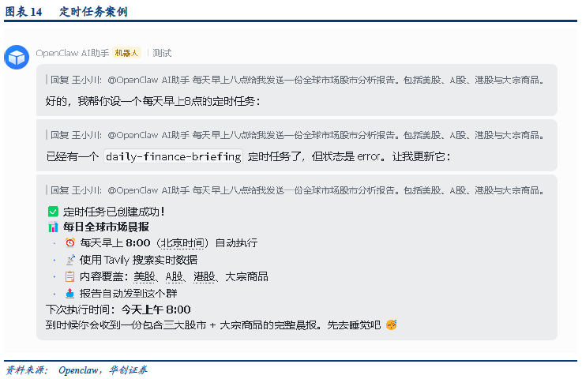
3.2
选股策略
给出数据源skill，可以直接进行选股策略：
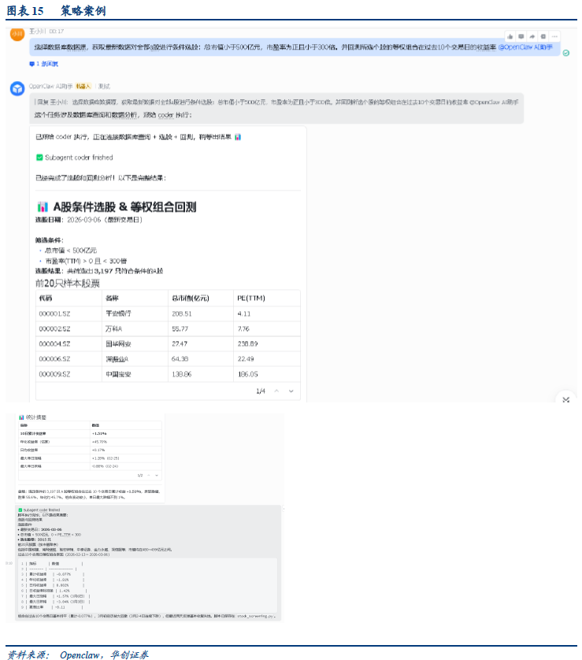
3.3
个股全面分析
可以快速使用数据库进行个股分析：
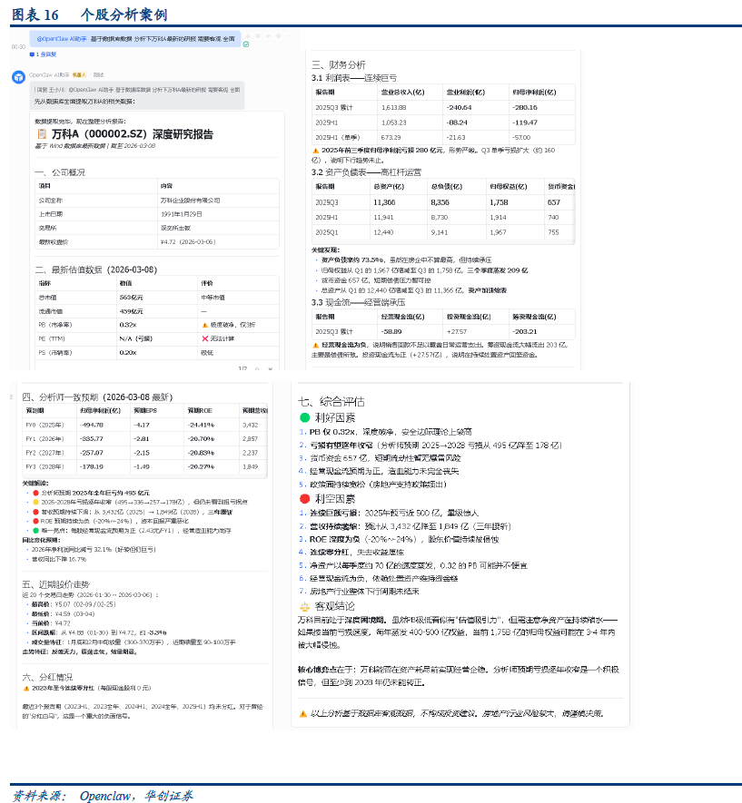
3.4
量化策略构建
例如，形态学量化策略：
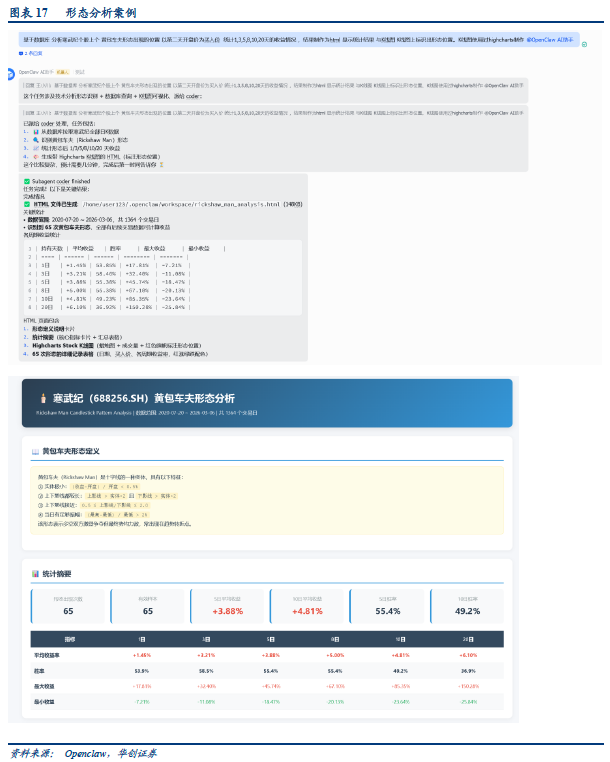
例如，更复杂的量化策略：指数仿制策略。
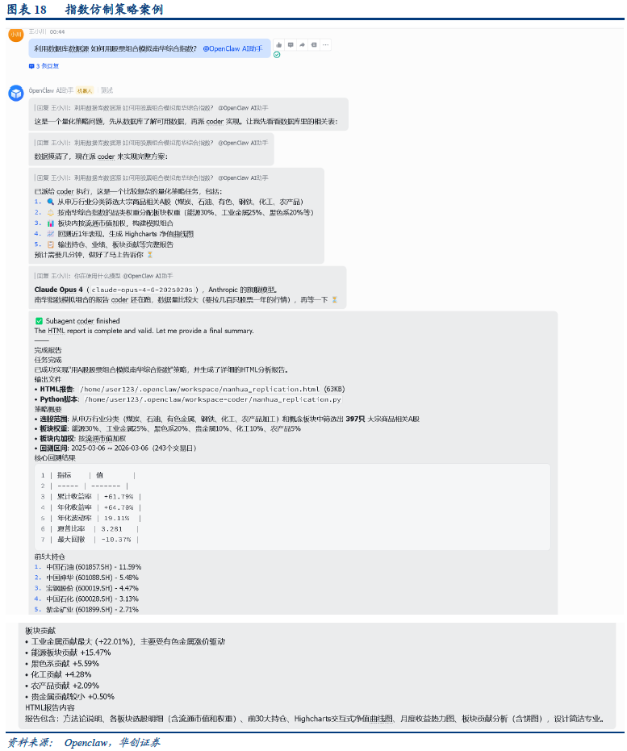
4
总结
本文介绍了四种在OpenClaw中安装Skills的方法，用好Skills，可以实现从“每次都给AI当老师”变成“AI替你当专家”。同时介绍了10种金融行业推荐使用的Skills。最后利用多种Skills完成了四种实战工作。
随着OpenClaw越来越广泛的应用，相信会有更多Skills被分享出来。
5
风险提示
Skills安装前需要先查看MD文件的内容，避免安装存在恶意代码或者隐含泄露本地文件的Skills；本报告相关介绍及方法仅供参考，不构成任何投资建议。
具体内容详见华创证券研究所3月9日发布的报告《量化看市场系列之六：OpenClaw金融行业必备Skills推荐与实战应用》。
欢迎扫码创见小程序阅读华创金工历史报告
华创金工团队
首席分析师、组长：王小川
执业编号：S0360517100001
电话：021-20572557
邮箱：wangxiaochuan@hcyjs.com
华创证券研究所定位为面向专业投资者的研究团队，本资料仅适用于经认可的专业投资者，仅供在新媒体背景下研究观点的及时交流。华创证券不因任何订阅本资料的行为而将订阅人视为公司的客户。普通投资者若使用本资料，有可能因缺乏解读服务而对报告中的关键假设、评级、目标价等内容产生理解上的歧义，进而造成投资损失。
本资料来自华创证券研究所已经发布的研究报告，若对报告的摘编产生歧义，应以报告发布当日的完整内容为准。须注意的是，本资料仅代表报告发布当日的判断，相关的分析意见及推测可能会根据华创证券研究所后续发布的研究报告在不发出通知的情形下做出更改。华创证券的其他业务部门或附属机构可能独立做出与本资料的意见或建议不一致的投资决策。本资料所指的证券或金融工具的价格、价值及收入可涨可跌，以往的表现不应作为日后表现的显示及担保。本资料仅供订阅人参考之用，不是或不应被视为出售、购买或认购证券或其它金融工具的要约或要约邀请。订阅人不应单纯依靠本资料的信息而取代自身的独立判断，应自主作出投资决策并自行承担投资风险。华创证券不对使用本资料涉及的信息所产生的任何直接或间接损失或与此有关的其他损失承担任何责任。
本资料所载的证券市场研究信息通常基于特定的假设条件，提供中长期的价值判断，或者依据“相对指数表现”给出投资建议，并不涉及对具体证券或金融工具在具体价位、具体时点、具体市场表现的判断，因此不能够等同于带有针对性的、指导具体投资的操作意见。普通个人投资者如需使用本资料，须寻求专业投资顾问的指导及相关的后续解读服务。若因不当使用相关信息而造成任何直接或间接损失，华创证券对此不承担任何形式的责任。
未经华创证券事先书面授权，任何机构或个人不得以任何方式修改、发送或者复制本资料的内容。华创证券未曾对任何网络、平面媒体做出过允许转载的日常授权。除经华创证券认可的媒体约稿等情况外，其他一切转载行为均属违法。如因侵权行为给华创证券造成任何直接或间接的损失，华创证券保留追究相关法律责任的权利。
订阅人若有任何疑问，或欲获得完整报告内容，敬请联系华创证券的机构销售部门，或者发送邮件至jiedu@hcyjs.com